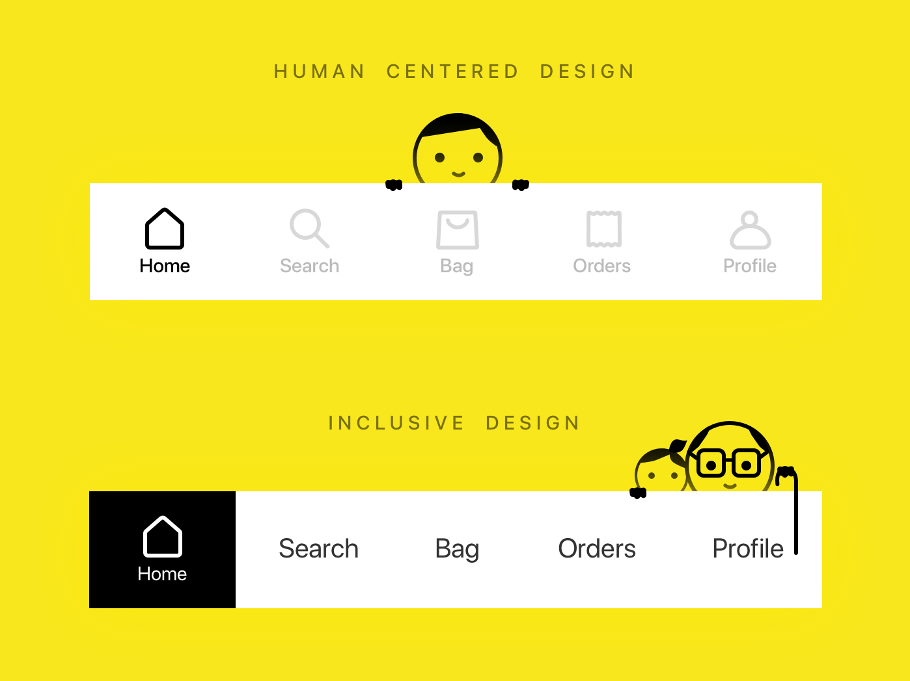

Понятие инклюзивный и универсальный дизайн — в чем разница
«Универсальный дизайн» — концепт, придуманный американским архитектором Рональдом Л. Мейсом. Он выделил 7 принципов «универсального дизайна», которые описывают, как создать хорошие условия для людей разного возраста и способностей. Он верил, что простой доступ к зданиям и свобода движения сделают жизнь проще для всех — не только для людей с ограниченными возможностями. Селвин Голдсмит переформулировал цитату Мейса в своей книге «Проектирование для инвалидов». Он придумал концепт «свободного дизайна». Затем эти термины стали известны как «инклюзивный» и «доступный дизайн». Так чем они отличаются?
«Доступный дизайн» — это простое, прямое и быстрое взаимодействие между пользователем и интерфейсом, созданное для людей с ограниченными возможностями. Такой подход — часть инклюзивной дизайн-стратегии.
«Инклюзивный дизайн» — дизайн, разработанный под потребности человека, интерфейс, который легко подходит разнородной группе людей с различными характеристиками и особенностями. У всех людей отличаются возраст, пол, язык, на котором они говорят, условия среды, в которой они обитают. Некоторые ограничены в доступе к технике, в количестве времени и денег. Инклюзивность делает дизайн доступным и удобным для всех и каждого.
На самом деле, разработка инклюзивного и доступного дизайна — своеобразный вызов индустрии. Однако это необходимый шаг вперед для развития социальных отношений. Прежде чем мы начнем говорить о преимуществах доступного и инклюзивного дизайна, а также его позитивном влиянии как на общество, так и на индустрию в целом, развеем пару мифов.
На картинке выше представлен идеальный пример, который описывает суть проблемы. Стандартное меню на сайте или в приложении решает одну задачу — даёт пользователям возможность перемещаться между разными страницами или экранами. В первом случае навигация адаптирована под молодых людей с хорошим зрением. Они легко смогут увидеть затемнённые надписи на белом фоне.
Второй пример попадает под определение инклюзивной дизайн-системы. Тёмные надписи на светлом бэкграунде идеально читаются. Главная страница выделена чёрным цветом для акцентирования внимания. Воспользоваться навигацией смогут и подростки, и люди преклонного возраста.